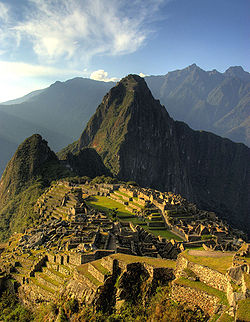

Huayna Picchu[1] Picchu ou Machu Picchu (em quíchua Machu Picchu, "velha montanha"),[2] também chamada "cidade perdida dos Incas",[3] é uma cidadela Inca, da Era pré-colombiana, bem conservada, localizada no topo de uma montanha, a 2 400 metros de altitude, no vale do rio Urubamba, atual Peru.
Foi construída como no início do século XV, por volta de 1420,[4] sob as ordens de Pachacuti. O local é, provavelmente, o símbolo mais típico do Império Inca, quer devido à sua original localização e características geológicas, quer devido à sua descoberta tardia em 1911. Apenas cerca de 30% da cidade é de construção original, o restante foi reconstruído. As áreas reconstruídas são facilmente reconhecidas, pelo encaixe entre as pedras. A construção original é formada por pedras maiores, e com encaixes com pouco espaço entre as rochas.
O lugar foi elevado à categoria de Patrimônio mundial da UNESCO, tendo sido alvo de preocupações devido à interação com o turismo por ser um dos pontos históricos mais visitados do Peru. A organização suíça New Open World Corporation (NOWC) em votação mundial gratuita pela internet e ligações telefônicas (mais de 100 milhões de votos pelo mundo) e com análise de arquitetos e arqueólogos classificou Machu Picchu como umas das sete maravilhas do mundo moderno. Há diversas teorias sobre a função de Machu Picchu, e a mais aceita afirma que foi um assentamento construído com o objetivo de supervisionar a economia das regiões conquistadas e com o propósito secreto de refugiar o soberano Inca e seu séquito mais próximo, no caso de ataque.
Fonte: Página de Machu Picchu na Wikipédia
